Company
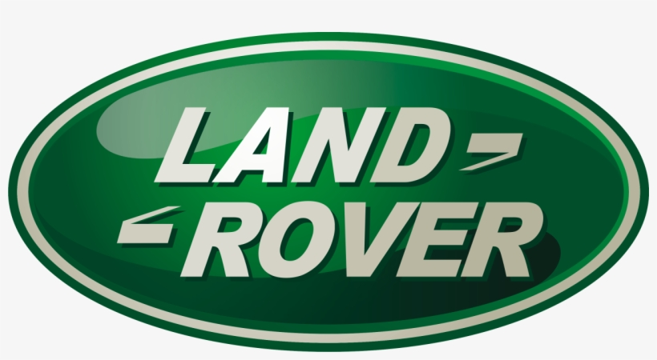
 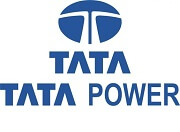
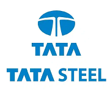
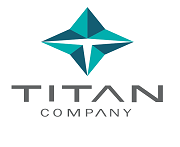
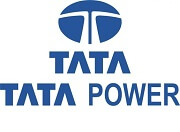
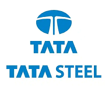
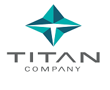
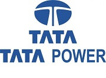
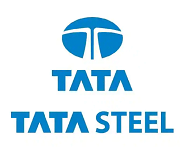
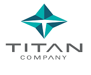
"I don't believe in takin right deecisions.
I take decision and then make them right"
A member of a prominent family of Indian industrialists and philanthropists (see Tata family), he was educated at Cornell University, Ithaca, New York, where he earned a B.S. (1962) in architecture before returning to work in India.
He gained experience in a number of Tata Group businesses and was named director in charge (1971) of one of them, the National Radio and Electronics Co. He became chairman of Tata Industries a decade later and in 1991 succeeded his uncle, J.R.D. Tata, as chairman of the Tata Group.
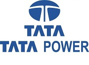
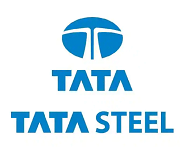
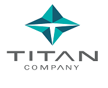
Ratan Tata's net worth is estimated to be around INR 3800 crores, with the majority of his wealth coming from his ownership of Tata Sons. He also has several investments in startups and technology companies that contribute to his wealth.
copyright © Mithlesh kumar